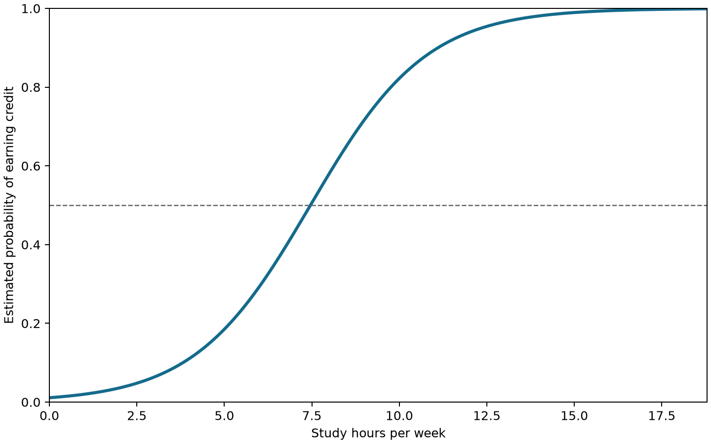

アルバイト時間をそろえた予測確率と分類
予測確率の曲線
アルバイト時間には標本平均を使い, 勉強時間には標本で観測した最小値から最大値までの値を入れます.
predict() に渡す表は, 当てはめ時と同じ列順にします.
const には切片のために 1 を入れます.
predict() は各行の線形予測子をロジスティック関数に通した確率を返します.
mean_work = credit["Part_time_Work"].mean()
study_hours = np.linspace(
credit["Study_Hours"].min(),
credit["Study_Hours"].max(),
200,
)
prediction_grid = pd.DataFrame(
{
"const": 1.0,
"Study_Hours": study_hours,
"Part_time_Work": mean_work,
}
)
probabilities = result.predict(prediction_grid)
fig, ax = plt.subplots(figsize=(8, 5), layout="constrained")
ax.plot(study_hours, probabilities, color="#146b8c", linewidth=2.5)
ax.axhline(0.5, color="#626262", linestyle="--", linewidth=1)
ax.set(
xlabel="Study hours per week",
ylabel="Estimated probability of earning credit",
xlim=(study_hours[0], study_hours[-1]),
ylim=(0, 1),
)
plt.show()
plt.close(fig)
アルバイト時間を標本平均の週約 11.85 時間にそろえると, 推定取得確率は勉強時間に対して S 字の曲線を描き, どの勉強時間でも 0 から 1 の範囲に収まります. 曲線は, 勉強時間が週約 7.46 時間のところで, 確率 0.5 の破線と交わります. 交点の勉強時間は, 線形予測子を 0 と置いた式を勉強時間について解いて求めます.
intercept = result.params["const"]
study_coefficient = result.params["Study_Hours"]
work_coefficient = result.params["Part_time_Work"]
boundary_study = -(intercept + work_coefficient * mean_work) / study_coefficient
print(f"アルバイト時間の標本平均 {mean_work:.2f} 時間")
print(f"取得確率が 0.5 になる勉強時間 {boundary_study:.2f} 時間")アルバイト時間の標本平均 11.85 時間
取得確率が 0.5 になる勉強時間 7.46 時間しきい値による分類
予測確率にしきい値 (例えば 0.5) を設けると, 取得か未取得かを予測できます. 予測確率がしきい値以上なら取得 (1), 未満なら未取得 (0) と分類します. 新しい学生に対する分類の正解率は, 係数の推定やしきい値の選択に使っていないデータで測ります. データの分け方は予測を参照してください.
分類の評価では, 実測と予測のクラスを混同行列に並べ, どちら向きの誤分類が何件あったかを読みます.
手書き数字の分類器を比べる演習では, ロジスティック回帰を 0 から 9 の多クラス分類に使います.
そこで使う LogisticRegression は既定で係数に正則化をかけるため, ここでの sm.Logit とは係数を求める基準も異なります.